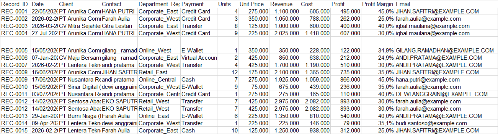
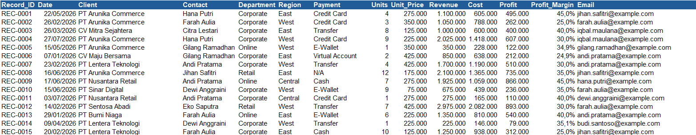

EXCEL • DATA CLEANING
Sales Data Cleaning
A practice case study focused on transforming raw sales data into a cleaner, more consistent, and analysis-ready dataset using Microsoft Excel.
01 — OVERVIEW
Project overview
The dataset contains raw sales records that require cleaning and standardization before they can be used for reporting and further analysis.
The purpose of this project is to demonstrate a structured data-cleaning workflow using commonly available Microsoft Excel tools and functions.
This project uses a synthetic sales dataset created for hands-on Excel data-cleaning practice. The objective was to simulate common data-quality issues found in real-world spreadsheet workflows.
02 — THE PROBLEM
Raw data is rarely ready for analysis.
Before analysis, the dataset must first be checked for inconsistencies and formatting problems that could affect reporting accuracy.
Extra Spaces
Unnecessary spaces can create inconsistent text values.
Inconsistent Text
Capitalization and naming conventions may differ across records.
Duplicate Records
Duplicate entries can distort summaries and calculations.
Formatting Issues
Dates, numbers, and text fields may use inconsistent formats.
03 — MY APPROACH
A structured cleaning workflow.
Prepare the Dataset
Improved worksheet readability by using AutoFit for rows and columns before starting the data-cleaning process.
Standardize Text
Used Find & Replace, LOWER, TRIM, and PROPER to remove unnecessary information, spaces, and inconsistent capitalization.
Restructure the Data
Used Text to Columns to separate combined Department and Region information into individual fields.
Handle Data Quality Issues
Removed duplicate records, identified blank cells using Go To Special, and filled missing values consistently.
Handle Formula Errors
Applied IFERROR to prevent calculation errors from affecting the final dataset and reporting.
Finalize the Output
Applied consistent formatting and removed worksheet gridlines to create a cleaner presentation-ready dataset.
04 — TECHNIQUES
Excel tools used
05 — BEFORE & AFTER
From raw to structured data.
Screenshots of the actual dataset will be added here after the Excel project is completed.
BEFORE

AFTER

06 — CLEANING SUMMARY
What changed?
07 — RESULT
An analysis-ready dataset.
The cleaning process transformed the original dataset into a more consistent and structured format by standardizing text values, separating combined fields, removing duplicate records, handling blank cells, and preventing formula errors.
The resulting dataset is easier to read, validate, and use for further analysis, Pivot Tables, reporting, and dashboard development.